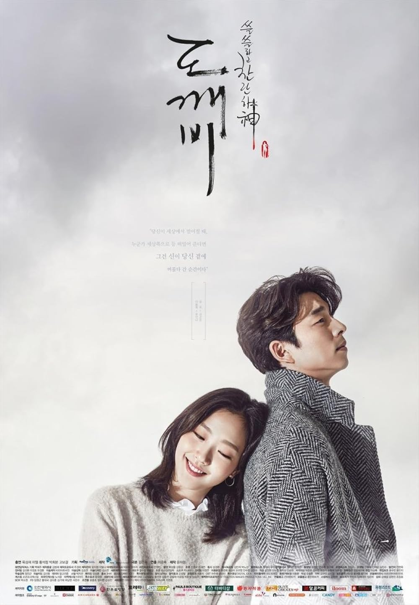
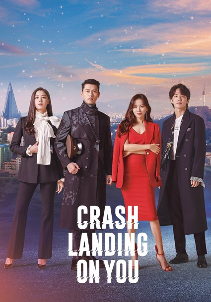
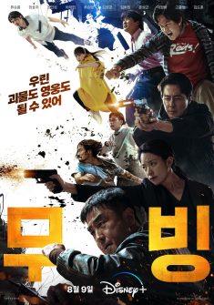
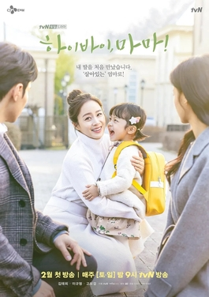
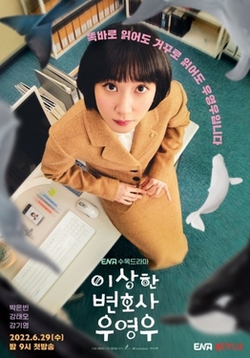
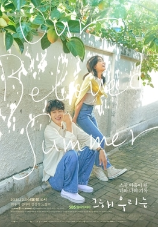
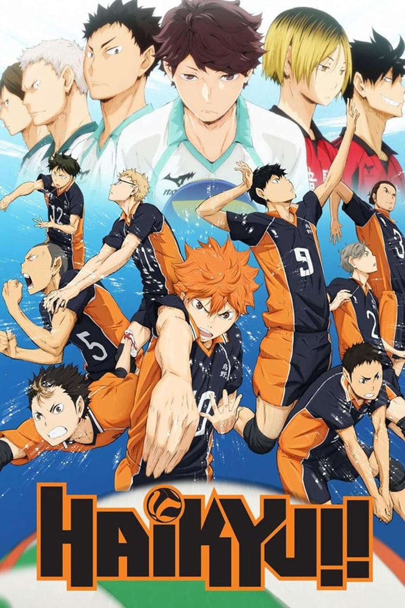
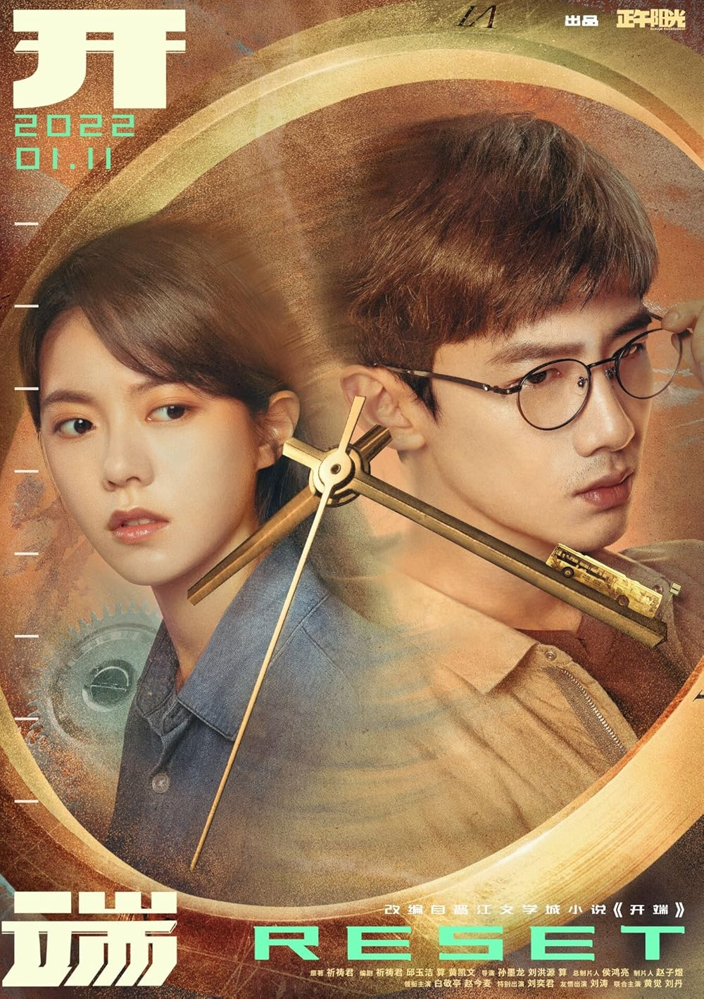
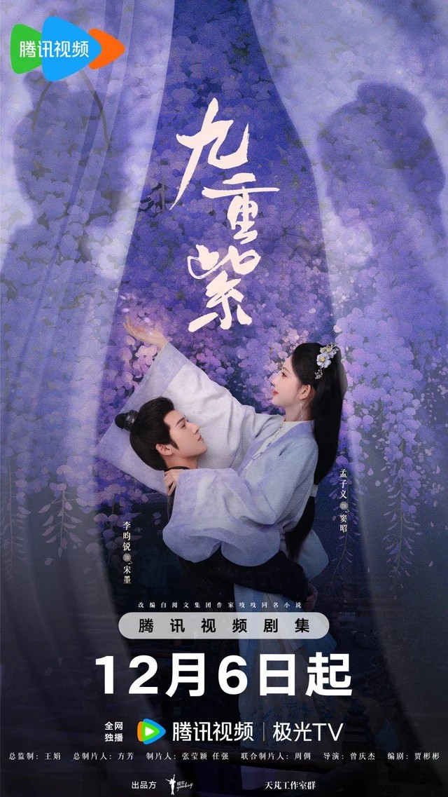

My crystal ball is telling me that you are an introvert who loves to fangirl. Well, you’ve arrived at the right place!
Here is where you can find the best picks for Asian media, including music, TV shows, and anime. You can think of this place like a little store where you can browse through recommendations of things to watch whenever you’re in in need of some real entertainment. Let the nerd-ing out begin!
About:
Yes, that’s right, this is a virtual group. Composed of 5 unique individuals with various skills in singing, producing, and dancing, PLAVE is both alike and unalike any other K-pop group out there. All their skills are NOT AI generated. They are real talented people wearing motion captured suits, maintaining an anonymous real life identity to the public.
Why You Will Love Them:
The best combination for anime nerds, k-pop fans, and v-tuber fans. Their music videos include a storyline where the members are “aliens” living on another planet called Asterum, hence why they are virtual. With self-produced music and choreography, PLAVE’s skills are very real and make them a great choice for those who just want to enjoy some music and have a fun time!
Get To Know Plave!
Fav Song Pick: Chroma Drift
Funny Tech Glitches
Song Medley
*Gems Only Album Pick*
I DID (By Yves)
Released in 2024
About:
Yves (pronounced “eve”) is an up and coming solo artist with a distinctive underground sound that makes her music a popular choice for when you’re feeling some type of (moody) way.
The album “I Did” features the deep house dance pop title track, “Viola” along with 4 other songs that combine R&B, synthpop, and soul genres. Her unique calming voice, use of English lyrics, and high quality production led the album to be ranked #8 on the Billboard's top 25 best K-Pop albums of 2024 list.
My Song Pick: Tik Tok
A chill (but fun) song that compares the cycle of wasting time on Tik Tok to a toxic relationship.
Watch The "Viola" Music Video!
Listen To The Full Album
*Random Song Rec Picker*
Intructions:
Using a random number generator from the Internet, set the range from 1-10 and let fate decide what your song recommendation of the day will be! See your random playlist below:
Random Playlist
Track #
Song Name
Artist Name
1
Shine (Feat. SUMIN)
YUGYEOM
2
Moonlight
Loossemble
3
TOGETHER!
JANNABI
4
Bubble
Red Velvet
5
Insomnia
ZEROBASEONE
6
NAN CHUN
SE SO NEON
7
Monster
DAY6
8
Glitch
KWON EUNBI
9
Lie Again
Seventeen
10
STEP
KARA
K-DRAMA KAROUSEL
*Classic K-Dramas (Basic But Amazing)*
Are you a beginner viewer looking for a K-drama that mixes various genres and will best encompass the true roller coaster that is the K-drama experience? The following dramas are right for you! They are widely known for iconic scenes, dramatic plot twists, and combination of drama, romance and comedy.
Lovely Runner
Year Released: 2024
The show follows Im Sol, a die-hard fan of K-pop star Ryu Sun-jae, who is mysteriously transported back to her high school days after learning of his tragic death, determined to save him from his future demise. With a plot twist that shocked everyone in just 2 episodes, this drama is regarded as one of the best in recent years!

Goblin
Year Released: 2016
This drama follows the story of Kim Shin, an immortal goblin who longs for death, and Ji Eun-tak, a young woman who can see ghosts, whose fates intertwine, along with the grim reaper and a rebellious chaebol heir. With historical plot lines that unravel rapidly and fantastical characters, you may find yourself shedding a few tears at this drama’s concept of grief and love.

Crash Landing On You
Year Released: 2019
Forbidden love, unlikely friendships, and a fish-out of water. The story follows a South Korean heiress, Yoon Se-ri, who, after a paragliding accident, lands in North Korea and encounters a North Korean army officer, Ri Jeong-hyeok, who helps her hide and navigate their contrasting worlds, leading to an unexpected romance. P.S. Did you know the main actors are married in real life?
Trailer
Trailer
Trailer
*Romance That’s Only Possible In Fiction*
It’s time to get overly invested in fictional characters’ relationships and start dreaming about love! These dramas are all about a silly little thing called love, not too serious/depressing, while still portraying the ups and downs of any relationship.
What's Wrong With Secretary Kim
Year Released: 2018
A narcissistic, rich vice-chairman Lee Young-joon and his capable, long-serving secretary Kim Mi-so, whose resignation after nine years throws their relationship into a hilarious and unexpected state. The show plays into the overly confident CEO trope, who is faced with the reality that not everything will go his way. A fast-paced show for those looking for something that will make them laugh at the silly misunderstandings and cute romance!
A Business Proposal
Year Released: 2022
This drama follows a Shin Hari, a food researcher who on request of her rich best friend, ends up attending a blind date to scare away her friend's suitor, only to find out he is her CEO, leading to a series of comical and romantic events. While sounding cliche and “rich guy, poor girl” trope-y, the show is the perfect example of what natural chemistry and good comedic writing can do for a light hearted yet down-to-earth romcom.
Hometown Cha Cha Cha
Year Released: 2021
Introverted dentist Yoon Hye-jin is a your typical city girl who moves to the seaside village of Gongjin after a life-changing circumstance, where she meets the local extroverted, charming, jack-of-all-trades guy, Hong Du-sik. But don’t get it wrong, they don’t seem to get along! The summertime seaside vibes create the perfect setting for this realistic small town romance that explores acceptance of self and forgiving yourself for your past.
Trailer
Trailer
Trailer
*Intense Shows (You Will Stay Up Late Watching)*
I’m not a horror fan, but these incredibly well-written shows will give you the same feeling of being on the edge of your seat to find out what happens next. *WARNING: There will be varied degree of violence and blood for certain scenes.*

Moving
Year Released: 2023
An action fantasy sci-fi television series about teenagers with superpowers and their parents who also possess abilities, struggling to protect their children from being used by other people. As the plot unravels, we jump from the high school life of three normal (yet unusual) teenagers, and the intense past of the parents as National Intelligence Service agents.
The Judge From Hell
Year Released: 2024
Justitia, a demon judge from Hell, mistakenly condemns the innocent Judge Kang Bit-na to eternal punishment. She is exiled to Earth for her mistakes, and forced to possess the human judge, while being tasked to find and kill ten unrepentant murderers within a year. A dark fantasy about a demon who navigates human relationships and a detective's investigation into her strange cases.
Alchemy of Souls
Year Released: 2019
A fantasy drama set in the fictional kingdom of Daeho with sorcerers and soul shifting magic. A powerful assassin named “Naksu” gets caught in the Alchemy of Souls spell, accidentally trapping her soul in a nearby weak women’s body. She ends up as the servant of a underestimated young lord who is unable to use magic. They learn to to overcome their twisted fates and fight against those who abuse forbidden magic.
Trailer
Trailer
Trailer
*Healing Shows (Grab Your Tissues)*
These shows will make you feel something again. They are focused on the human experience, whether that’s dealing with family relationships, break-ups, work, disabilities, grief, and so much more. While not as fantastical, sometimes real life can be just as crazy as an action-packed drama.

Hi Bye, Mama!
Year Released: 2020
A ghost comes back to life? The story follows Cha Yu-ri, a woman who becomes a ghost after a tragic accident, who gets a second chance at life for 49 days to regain her human form. She reunites with her husband, who has remarried, and her daughter. The drama wonderfully deals with grief, as well as dealing with her complex relationship with her husband’s new stable life. TRUST. You will need tissues for this one.

Extraordinary Attorney Woo
Year Released: 2022
The brilliant attorney Woo Young-woo starts her new job as a rookie lawyer in one of Korea’s most prominent law firms, tackling both small and big tricky cases, while dealing with the challenges that come with being a woman on the autism spectrum. This drama is lighthearted, focused on the adorable Woo Young-Woo as she navigates her court life, an absent mother, and a possible budding romance with her co-worker.

Our Beloved Summer
Year Released: 2021
A coming of age, romantic comedy revolving around ex-lovers who broke up with a promise never to meet again. As luck would have it, the documentary they filmed ten years ago in high school went viral and they are forced to face the cameras together again by their producer friend. The series depicts their complicated feelings and growth, as well as exploring whether a failed relationship can be healed again.
About:
"The Apothecary Diaries" is set in an ancient Imperial China background. It follows Maomao, a young apothecary kidnapped and sold to the Imperial Palace, where she uses her knowledge to solve medical mysteries and intrigue, ultimately drawing the attention of a powerful eunuch and becoming involved in the palace's secrets.
Why You Should Watch:
The mysteries in this show are unpredictable, yet very logical when they are revealed. With episodes that are seemingly separate stories, we later find out that they are all connected to a bigger storyline. Not to mention, Maomao is one of the greatest female protagonists of all time. We always look forward to what her crazy obsession to medicine and curiosity will lead her to next! (p.s its always funny to see Maomao’s obliviousness towards a certain someone’s feelings towards her)
Watch The Trailer!
Listen To The OP
*Anime For Nerds*
Everyone can relate with being a nerd about something. Whether you’re a closet manga reader, a hardcore idol fan, or a rock lover, these anime will make you feel seen! Although, Oshi No Ko may disorient you a little. So be warned. Happy watching!
Love Is Hard For Otaku
Year Released: 2019
The story follows 4 of your typical mature office workers. While they all look relatively normal on the surface, the truth is that they’re all secretly nerds about something embarassing! For instance, co-workers Narumi and Hirotaka. Narumi is a secret yaoi fan, and Hirotaka, a hardcore gamer. What happens when the secret is out? This is comedic slice-of-life romance will make you laugh while finding comfort in embracing your nerdy passions!
Oshi No Ko
Year Released: 2023
A mysterious and intense story about the various ups and downs of the entertainment industry. We follow a gynecologist, Gorou, who is a big fan of idol Ai Hoshino, who is also his patient. After Gorou's murder, he is reincarnated as her newborn son, Aqua, along with his terminal patient, Ruby, who is reborn as his twin sister, and they navigate the Japanese entertainment industry. Probably includes one of the best opening episodes in the history of anime.
Bocchi The Rock
Year Released: 2022
This slice-of-life story follows the story of the introverted, socially anxious highschooler Hitori "Bocchi-chan" whose only hobby is posting guitar covers to her anonymous YouTube account. After being unable to reject the invitation to join the Kessoku Band, will Bocchi be able to overcome her shyness and stand on stage? And maybe finally make some friends? A show with painfully relatable and comedic moments for the introverts out there!
Iconic OP
Trailer
Funny Scene
*Beautiful Animation, But Am I Why Crying*
Prepared to be wowed by the incredible animated scenery, orchestra music, and impeccable writing. But wait a second. Why am I crying over these beautiful moving drawings? If you love some cinematic top-tier animation but aren’t afraid to shed a few tears in the process, these anime are the ones for you!
Frieren: Beyond Journey’s End
Year Released: 2023
Have you ever seen a story that starts from the end? We follow Frieren, an elf mage with a near-immortal life span, after the defeat of the Demon King. She grapples with the fleeting nature of human existence, and struggles to understand human relationships. Years after the Demon King’s defeat she begins a journey while revisiting the places she and her former comrades explored. (Please watch this show. It’s amazing.)
Violet Evergarden
Year Released: 2018
Set in 19th century Europe in the aftermath of a war, a young girl named Violet finds herself sitting in a hospital bed with mechanical prosthetic arms. Struggling with her identity as an ex-soldier, she seeks to understand the meaning of the phrase "I love you" and finds a new purpose as an "Auto Memory Doll" at a postal service, writing letters that help people express their emotions. Let me know when you get to Episode 10.
Your Name
Year Released: 2016
A famous movie that probably doesn’t need recommending but I’ll do it anyways! The story follows two teenagers: Mitsuha from the countryside and Taki from the city of Tokyo, who share a profound, magical connection upon discovering they are swapping bodies. Things manage to become even more complicated when the boy and girl decide to meet in person. Get ready to wrap your brain around this mind-boggling love story that transpires through time and place!
Trailer
Trailer
Trailer
*Pick Your Poison (3 Vastly Different Shows)*
You got your intense shonen action, highschool volleyball competitions, or watching 2 geniuses who like each other playing mind games. While you can’t go wrong with any one of these shows, this just goes to show that there’s an anime out there for everyone!
Kaguya-sama: Love Is War
Year Released: 2019
Student council president Miyuki Shirogane and vice-president Kaguya Shinomiya are known as the geniuses at the prestigious Shuchiin academy. Although they appear to be the perfect couple; but both are too proud to confess their love and commit to psychological warfare to make the other confess their love first. While probably more comedy than romantic, their over-the-top dramatic thinking will be sure to represent the inner thoughts of many awkward teenage minds!
Jujutsu Kaisen
Year Released: 2020
In a world where negative human emotions manifest as curses, Jujutsu Kaisen centers around Jujutsu Sorcerers, individuals who can manipulate cursed energy to exorcise these curses and protect humanity. Yuji Itadori, a seemingly ordinary high school student, who becomes entangled with a secret world of Jujutsu Sorcerers after swallowing a cursed object, the finger of the powerful demon Sukuna, to protect his friends.

Haikyuu
Year Released: 2014
Whether you’re a sports player or not, this inspirational, slice-of-life, volleyball anime is guarantee to spark your competitiveness. It focuses on Shoyo Hinata, a short high schooler inspired by a "Little Giant" and was set on the path of volleyball ever since. He was defeated by prodigy setter Tobio Kageyama in middle school. However, what will happen when they both end up on the same highschool team?
Trailer
Gojo Satoru
Sneak Peak
CHINESE SHOW CENTRAL
*Reality Dating Show Dopamine*
You’ve probably heard of many dating shows, whether it’s Transit Love, Love is Blind, Single’s Inferno, etc. But little do you know that China makes the best ones. These are some of the top rated reality dating shows in China that each have their special charm! Look out for love triangles, plot twist couples, and dramatic confessions! (ENG SUB available!)
Twinkle Love (S3)
Year Released: 2023
For university students who feel some regrets for not living to their fullest during their years of school, this dating show focuses on the pure, awkward, and funny romantic and friendship stories of 20 year olds who find love while experiencing the school field trip of a life time! Every day they send a secret voice message to the person who made their heart twinkle. (p.s. the best editing in a dating show I’ve seen!)
Heart Signal (S6)
Year Released: 2023
Individuals looking for love amidst their busy working lives move in together to a collective house, for a month, where they are encouraged to invite each other on dates. Every night, they send a heart signal message to the one they want to express their feelings to. Witness how people with different personalities and jobs find love and who will take the first move to press to confession button! This season takes place in the suburbs of Beijing.
Love Actually (S4)
Year Released: 2025
Is there still love to be found for 30+ mature adults? Well, yes! This show follows a similar concept, with people who move in to a collective house, except this time, they go on a vacation together in a seaside home! The show focuses on what’s different between the dating ideals of a younger adult vs. when you’re older. What are the concerns involving long-distance, similar lifestyles, age, and marriage?
Watch Ep. 1
Watch Ep. 1
Watch Ep. 1
*The Competition Is On!*
These reality shows are all about the eliminations and surviving till the end! If you’re someone with a competitive spirit and are looking for a show where you can root for your favourite couple, idol, or dancer, these shows are perfect for you. (ENG SUB available!)
Fight For Love
Year Released: 2023
The program invites 10 couples who are about to get married to compete with each other in physical and strategic tasks related to marriage propositions, starting a true love trial where they face challenges together and verify each other. Eliminations happen each round, and only the number one couple will receive the chance to see their wedding dreams come true. Trust me, the competition will be much more intense than you expect.
Street Dance Of China (S3)
Year Released: 2020
A popular dance competition show that has gone worldwide! 4 dance captains (famous celebrities interested in dance) select dancers from across the world to join their team and compete in various choreography and freestyle battles. If you’re into dance, this show will show you all different types of genres, from popping, locking, urban, contemporary, break dancing, waacking, and more.
Idol Producer
Year Released: 2018
The iconic idol competition show in China. 100 trainees are set to audition and compete for the final 9 spots in the boy group, Nine Percent. Each trainee has something special. Whether that’s vocal talent, undeniable star quality, or professional dancing. Featuring funny trainee interactions, strict judging from the famous singer Lay Zhang (EXO), and cover song stages, this show will get you invested in the competition, real fast.
Watch Ep. 1
Watch Ep. 1
Watch Ep. 1
*Reality TV Getting Too Real*
Want an emotional reality TV show that truly documents what it means to be human? These shows follow the growth and struggles in the roles that we have in society, whether that’s being a good partner, parent, or even an employee. They are incredibly insightful into different relationship dynamics and careers. Real life has never been more interesting. (ENG SUB available!)
See You Again (S1)
Year Released: 2023
Can a couple on the brink of divorce save their marriage? Following the new law in China that requires a cooling period of 30 days, this reality show focuses on 3 divorced/divorcing couples who go on a natur3 travel trip for a period of 18 days to see what drama will go down, and whether they will see each other again, or see each other never again. Highly philosophical and insightful conversations into the marriage life and just super interesting!
Where Are We Going Dad? (S5)
Year Released: 2017
What will happen when you dump celebrity fathers with their children in random small villages in China? And what will happen when they are faced with unexpected challenges? An absolutely adorable travel show that features improving parent-child relationships, teaching the children independence, and most of all, the heartwarming friendships and bonds between all the fathers and children. And if I remember correctly, they also do a child swap for one day, which is fun.
An Exciting Offer (S5)
Year Released: 2023
Ever wonder what it’s like to be an lawyer intern at a top legal firm? This show focuses on 8 chosen interns through a 2 month internship period, going through various real lawyer challenges in an attempt to prove themselves worthy of receiving the 2 offers available to become a full-time employee. The show includes engaging cases and legal situations, and is a real look into how even the most qualified candidates can struggle due to their lack of experience in the work field.
Watch Ep. 1
Watch Ep. 1
Watch Ep. 1
*Golden Chinese Drama Picks*
Are you curious about what the Chinese cinematic experience is like? Well these dramas just about encapsulate that for you. In my humble opinion, they set the standard for each of their respective popular categories. One is a high school youth drama, one is a mystery thriller, and finally, an ancient China historical story! (ENG SUB available!)
When I Fly Towards You
Year Released: 2023
Su Zaizai starts her new life as a transfer student to Yucai Highschool, where she meets the aloof and smart Zhang Lurang. Little did she know what Zhang Lurang is failing English class! And thus begins an agreement between them to tutor each other in Math (Zaizai’s failing subject) and English. This is a heartwarming coming-of-age romance featuring five main casts and their stories of family, love, and friendship throughout their young adult lives.

Reset
Year Released: 2022
What if you were stuck in a time loop, doomed to repeat the same tragic bus explosion forever? This is what happens to Li Shiqing, a college student who is desperate to escape the phenomenon that just happened to her one day. Frustrated by her failures to avoid the explosion, she decides to drag fellow bus passenger Xiao Heyun into the time loop, and together the investigate each of the passengers to identify the true criminal that is causing this to happen. Get ready for the plot twists and unexpected emotional turns of a lifetime!

Blossom
Year Released: 2024
Set in Ancient China, the intelligent but sickly Dou Zhao discovers her husband’s affair with her younger stepsister. After giving up her household status and being left with no place to call home, she is helped by the intimidating general Song Mo. Unfortunately, things take a turn, and both of them get killed in a plot for treason. However, time turns backwards to decades ago, and Dou Zhao returns to her childhood self, determined to save her tragic fate. What she doesn’t expect, is that fate will bring her and the General Songmo back again, uncovering political turmoil, family secrets, and maybe even romance.
Watch Ep. 1
Watch Ep. 1
Watch Ep. 1
(>_<)
hyperfixation station
best viewed on desktop
created by Wen Ye wen.ye.wxy@gmail.com
last updated: April 2025